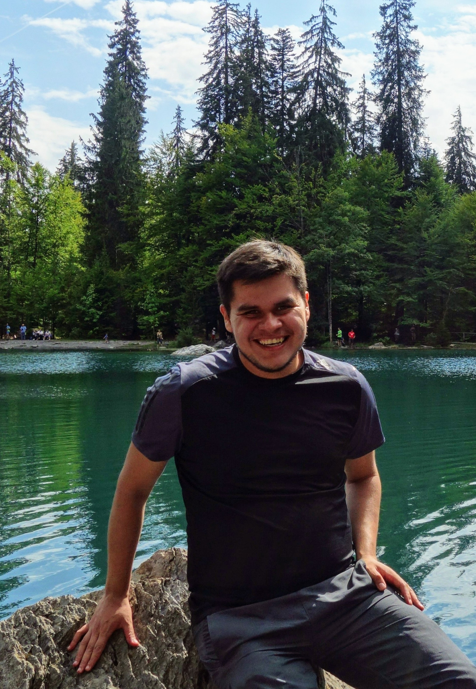

|  | PhD candidate at École des Mines de Paris, France.
I'm working towards a PhD degree in Applied Mathematics from École des Mines (Centre automatique et systèmes) under the supervision of Pierre Rouchon and Alain Sarlette. I do my doctoral studies as part of the QUANTIC group at Inria, led by Mazyar Mirrahimi. My CV is available here. Contact
Centre de recherche Inria de Paris, équipe-projet QUANTIC |
I am currently working on feedback control and stabilization problems for quantum systems, and investigating the use of quantum feedback for the protection of quantum information. More generally I'm interested in problems related to